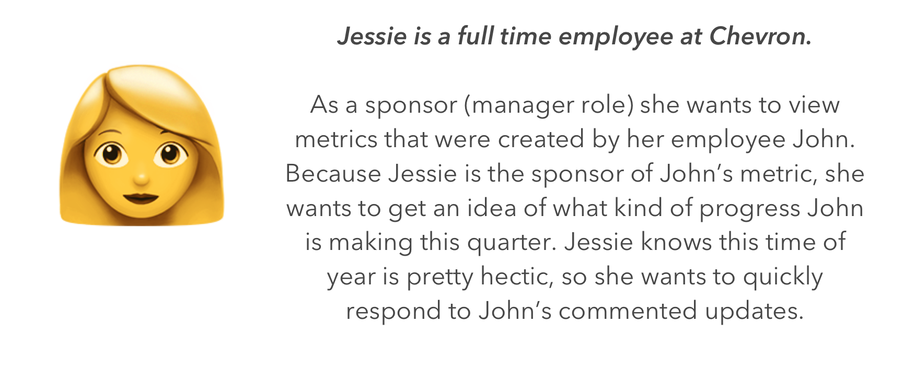
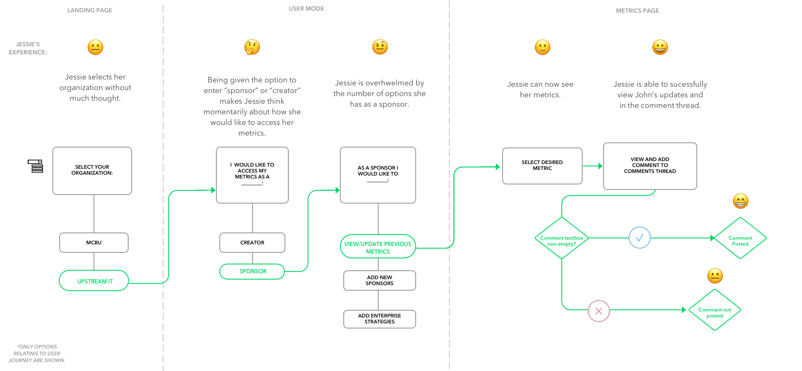
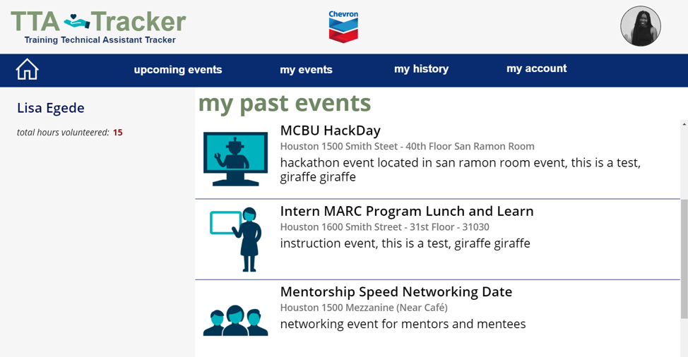
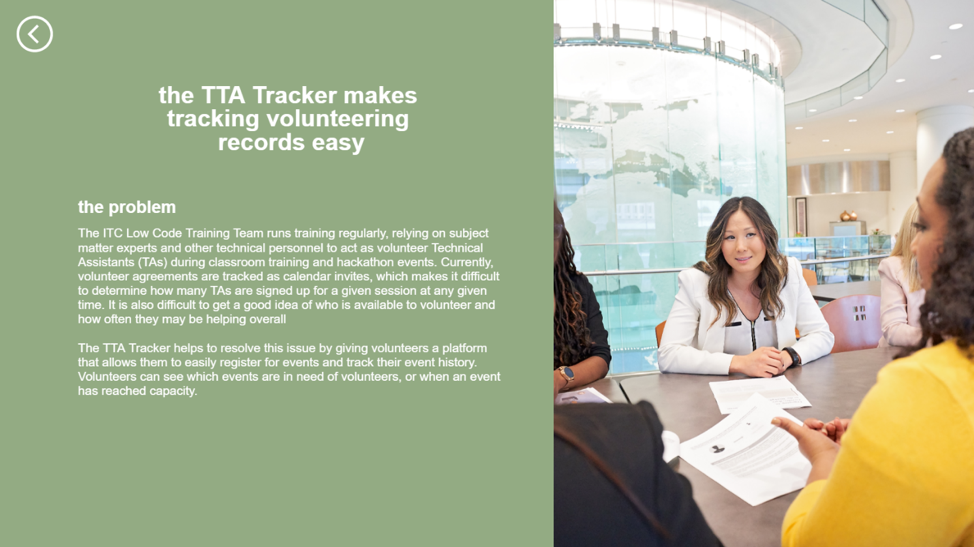

Selected Design Case Studies
My time spent at Chevron as a Software Developer and Product Designer allowed me to excercise a diverse set of skills while building a high impact product. Upon joining the Information Communcation Technology (ICT) department, I began working on an agile team that consisted of full-time Chevron employees.
Because agile methodology was a fundamental part of the development process, we met frequently across 4 total sprints to gather continuous, iterative feedback directly from the app's prospective system stakeholders.
The Project
To make sharing applications within business units easier, I was tasked with designing and developing the Functional Excellence Framework (FEF) Application on a Microsoft cloud platform called PowerApps.
The FEF System Objective:
Chevron employees maintain yearly performance metrics and operational targets. Each quarter they review these metrics and establish updated goals based on the accomplishments made in the previous quarter. Managers (Sponsors) utilize this system to view structural updates and write context-specific feedback on execution, while reporting employees (Creators) can initialize and manage metrics records.
The Problem: Facilitating a Large Transition
The IT department was undergoing a major technical structural shift when I entered as an intern: the legacy database migration to the cloud. This process was a stressful period for long-time employees navigating changed platform tools. Simultaneously, the core desktop software being used by Upstream IT was slow and unpleasent for ICT employees to navigate.
Here are couple of issues employees were running into:
- System comments on specific team metrics were accidentally being overwritten by asynchronous updates.
- When records were initialized, timestaps were not recorded.
- The system was unable to audit or track exactly whichemployee modified a specific performance metric.
My core goal was to build a secure internal platform that streamlined record tracking while intentionally managing the human elements of the transition. It was essential that the system interaction patterns felt stable and highly predictable for longtime employees.
The mirror some familiaroty, I followed Chevron's font and color scheme by referencing their website (chevron.com).
User Journey & Architecture Layouts
I wanted to create a process that was clear yet semi-methodical, helping Chevron employees achieve a comfortable and familiar experience. To ground this process, I mapped out a user persona and workflow tracking mechanics to align with daily realities.
Because I was developing an application that was drastically different than the previous, I wanted to ease its users into the new product. This meant using step by step screens and using a color scheme that felt comfortable and familiar. I consistently looked for feedback from my team and current employees to create a layout that fit their needs.
The User Journey

Our user persona: Jessie.
An example of Jessie's sequential interaction pathway is mapped below:

Jessie's end-to-end milestone tracking journey flow map.
To ease employees into the application environment, I built a step-by-step layout structure utilizing standard typography structures and components. I established interface patterns aligned perfectly to Chevron's digital system colors and design hierarchies, utilizing familiar branding patterns to drastically lower cognitive friction.
The Hackathon Project
Toward the end of the internship, I partnered with 4 cross-functional engineers for an internal 3-week product hackathon challenge.
The Use Case: Build an operational portal for corporate volunteer event sign-ups, enabling community administrative leads to request, approve, and match internal talent dynamically.
Our extended three-week timelines allowed our team to dive deep into workflow edge cases, component scaling, lowercase typography patterns, and accessible views, ultimately proving highly impactful when presenting system details directly to corporate judges.

Final production layout tracking milestone metrics cleanly.

The Outcome & System Value
My time spent at Chevron consisted of two large scale and impactful desktop applications that helped tracked metrics at the company. As the sole designer of the FEF Application, I regularly conducted user-centered feedback iterations with internal teams to build trust. I completed the 3-month cycle by delivering a live deployed application presenting the final builds directly to 15 key IT leads. The functional tool directly automated and supported key operations for approximately 30 direct administrative users and safely scaled to optimize performance record-keeping workflows for nearly 200 total ICT employees across business groups.
The Background & Motivation
In collaboration with a group of computer science and HCI students, we prototyped and design a game launching platform called Ambrosia. THis lightweight gaming launcher was optimized to consolidate local execution of emulated files scattered across separate directories and environments. We wanted to create a tool that removes setup frustration by providing automated paths, structural storage scanning, and high-fidelity interface indexing.
To ground our layout ideas in real user needs, we designed a targeted validation survey distributed across computer science cohorts and specialized online community boards, identifying user interface gaps and layout patterns lacking across existing alternative tools.
High-Fidelity Interface
We executed the complete interface lifecycle inside of Figma. We collaborated through interactive canvases, using real-time communication tools and explicit GitHub Issue tracking matrices to link visual components directly to production code specifications. The system leverages crisp card UI groupings, minimalist side-navigation systems, and inline micro-interactions to clarify system states.
Ambrosia interface and mini demo.
Background and Motivation
While studying abroad at the university's facility in Arezzo, Italy, I served as a media intern tasked with completely redesigning the interactions, user interface, and value proposition of the OUA Touch Screen kiosk system. Located centrally inside the entrance lobby of a renovated monastery housing complex, the physical installation had been historically underutilized because it lacked clear messaging and meaningful user utility.
Relocating to a foreign environment presents unique spatial and social anxieties for students—from basic local language challenges to managing medical visits or grocery navigation safely. My structural challenge was transforming an isolated, dark touch kiosk into an active, contextual hardware display that students confidently relied on to support daily tasks.
The User Interface
To improve user engagement, I altered the first impression of the interface by re-spacing cluttered icon groupings and applying high-vibrancy visual indicators that clearly signaled touch interactivity. Working directly with the campus director, we introduced a interactive touchscreen that students could not utilize to navigate their new home:
- Interactive mappings detailing nearby restaurants, pharmacies, public transit connections, and grocery operating hours.
- Live local cultural listings, campus advisories, and scheduling data.
- Real-time travel warnings and regional updates (e.g., proactive notifications of upcoming European transit labor strikes) to safeguard student travel logistics.
- A custom interface grouping localized student campus publications and domestic headlines, updating weekly to help users stay connected to home.
The News stand was a feature to help students feel connected with happenings back home, as well as current events going on in Europe.
Twitter was also a great source for students, especially when it came to the discussion of events in Norman, and the OU Football games.
The Demo
System Prototype Demo: Simulating interactive navigation, tab transitions, and news selection layers.
Learnings
This unique role and experience provided some really important insights: that a design system must always prioritize user needs over aesthetic preferences. For example, a holiday interface element looping high-volume ambient music proved to be a controversial addition, demonstrating that incorporating unwanted elements detracts from true, inclusive utility.
By shifting focus entirely toward user-centered stability, the OUA Touchscreen successfully enhanced the user experience, and helped provide a smooth transition for students that semester and for years to come.
The Research Behind the Interface
The case studies above show end-to-end product design work. The research below reflects a different, earlier stage of the same skill set: identifying what should be built before design begins.
My work focuses on the earliest stages of product development, where research defines what should be built before high-fidelity design begins. Across academic and industry collaborations, I have:
- Identified unmet user needs through interviews, co-design workshops, and community-based research
- Developed design principles and frameworks that guide product development in both industry and academic settings
- Translated qualitative research into actionable product requirements for cross-functional teams
A throughline across this work: mainstream product research needs get flattened or ignored in "default user" design thinking. There is value in not only highlighting diverse perceptions of AI systems, but making meaningful design decisions that are oriented them.
✨Selected Research Publications ✨
🏆 "For Us By Us": Intentionally Designing Technology for Lived Black Experiences (DIS 2024) — Honorable Mention
Lisa Egede, Leslie Coney, Brittany Johnson, Christina N. Harrington, and Denae Ford. Proceedings of the 2024 ACM Designing Interactive Systems Conference.
Utilizing community narratives, this paper establishes a "For Us By Us" design framework that provides principles for centering technology on the lived experiences of Black communities.
Assessing the Fairness of AI Systems: AI Practitioners' Processes, Challenges, and Needs for Support (CSCW 2022)
Michael Madaio, Lisa Egede, Hariharan Subramonyam, Jenn Wortman Vaughan, and Hanna Wallach. Proceedings of the ACM on Human-Computer Interaction 6, CSCW1.
Through interviews and workshops with 33 AI practitioners, this work identifies practitioner needs and translates them into actionable product requirements for improving AI fairness.
Trust, Comfort and Relatability: Understanding Black Older Adults’ Perceptions of Chatbot Design for Health Information Seeking (CHI 2023)
Lisa Egede and Christina Harrington. Proceedings of the 2023 CHI Conference on Human Factors in Computing Systems.
This study captures the lived experiences of Black older adults to develop experience maps and design recommendations for building trust in health-seeking chatbots.
Exploring Culturally Informed AI Assistants: A Comparative Study of ChatBlackGPT and ChatGPT (CHI EA 2025)
Lisa Egede, Ebtesam Al Haque, Gabriella Thompson, Alicia Boyd, Angela D. R. Smith, and Brittany Johnson. Extended Abstracts of the 2025 CHI Conference on Human Factors in Computing Systems.
This research surfaces the need for culturally informed AI as a key opportunity area, demonstrating how cultural tailoring improves AI utility for Black users.
AI Automatons: AI Systems Intended to Imitate Humans (FAccT 2025)
Alexandra Olteanu, Solon Barocas, Su Lin Blodgett, Lisa Egede, Alicia DeVrio, and Myra Cheng. Proceedings of the 2025 ACM Conference on Fairness, Accountability, and Transparency.
This work surfaces design challenges surrounding AI anthropomorphism and offers strategic recommendations for mitigating machine behaviors that risk harmful user over-reliance.